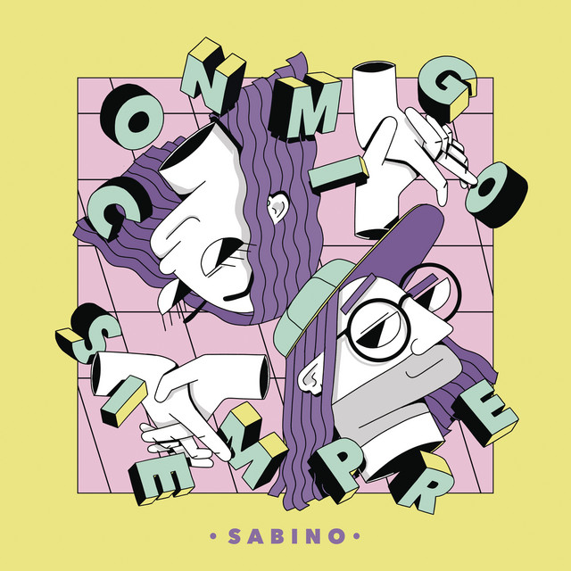
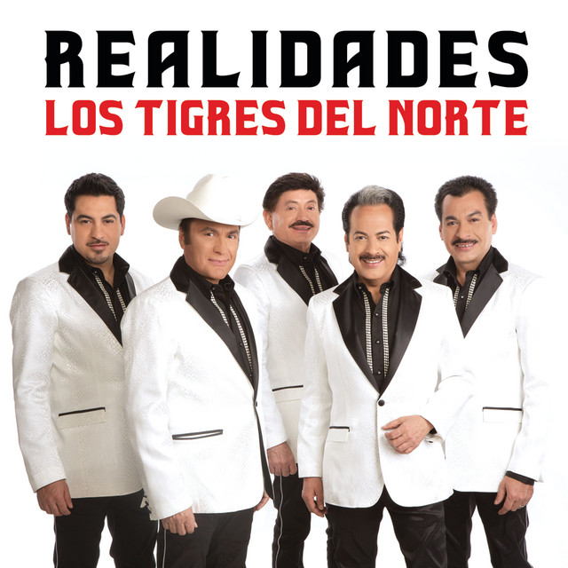
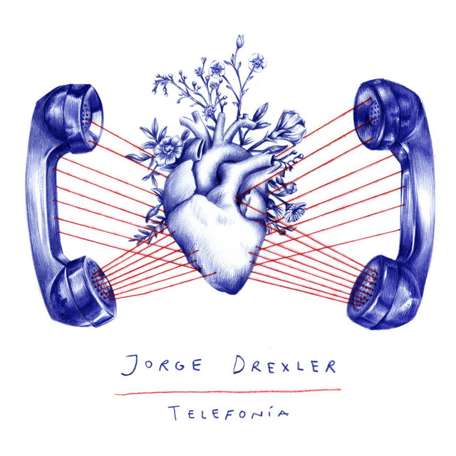
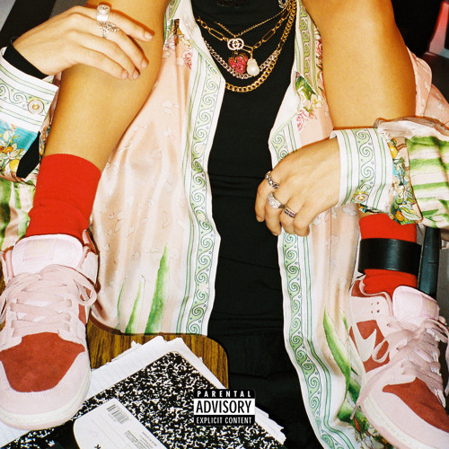
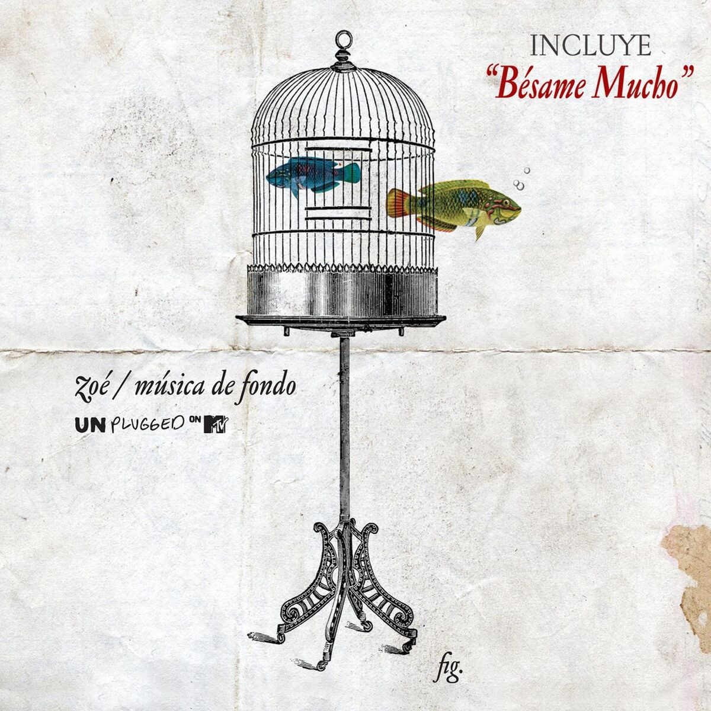
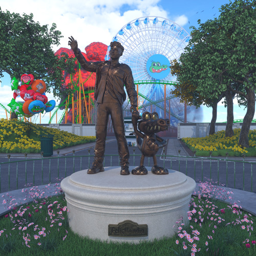

Creo que las canciones pueden decir más que las palabras

Conmigo Simpre

Que tal si eres tu

Telefonia
Cenizas en el Mar
Reina Pepiada

Tuyo
SIN MIRAR LAS SENALES

Luna
Soñé

Shh
Online:(
Parteme la cara
hoy 04/05/2025 comi burritos, y recorde el dia que te lleve burritos y baguets y acompanarte a que te nebulizaras, fue la primera vez que preparaba esa comida y queria tu opinion, me dio nostalgia la verdad, textranoMucho
Quiero mi mejor version para ti, para nosostros
https://vt.tiktok.com/ZShjbt3EM/
A veces el amor necesita romperse para reconstruirse mas fuerte, para volver a intenrtalo, no por lo que fuimos, sino pot lo que podemos ser: mas sanos, mas sabios y mas nuestros
Solo estamos en pausa, pronto volveremos a estar juntos y retomar verdad que shi?
Solo una vez mas por favor:c
simpre gritaba con tus mordidas por que me dolian, ahora me duele mas no senitrlas
Quiza ya no hablemos como antes, quiza no volvemos a tener la misma confianza, ya no hacemos bromas, ni mucho menos nos contamos como fue nuestro dia, pero eres la personas que estuvo a mi ladom que ne hizo reir, ser feliz y que me daba paz y te doy gracias por eso